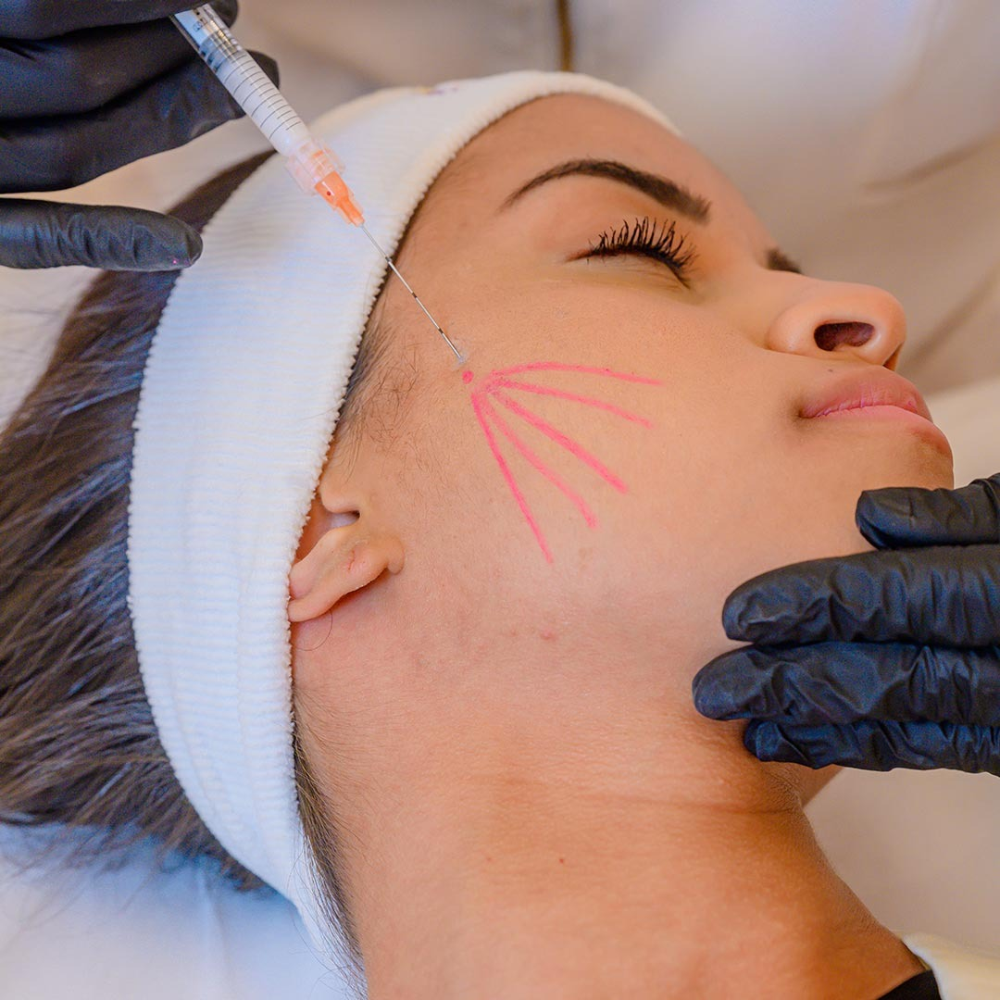

Bioestimulador de Colágeno
em Brasília — Natural e Duradouro
Estimule seu próprio colágeno e rejuvenesça de dentro para fora. Resultados progressivos e naturais que duram até 3 anos. Clínica no Connect Towers, Águas Claras — Brasília DF.

O que é o Bioestimulador de Colágeno?
O Bioestimulador de Colágeno é uma substância biocompatível injetável que ativa os fibroblastos da pele a produzirem mais colágeno de forma natural. Diferente dos preenchimentos, que apenas preenchem, o bioestimulador trabalha com a própria biologia do seu organismo.
O resultado é um rejuvenescimento gradual, progressivo e extremamente natural: firmeza, volume e melhora da qualidade da pele que duram de 2 a 3 anos.
Benefícios do Bioestimulador de Colágeno
Resultado Natural
O próprio organismo produz o colágeno, garantindo resultados extremamente naturais e progressivos.
Longa Duração
Resultados que duram de 2 a 3 anos — muito mais duradouros do que preenchimentos convencionais.
Volumização Facial
Restaura volumes faciais perdidos com o envelhecimento de forma progressiva e harmoniosa.
Melhora da Qualidade
Além de volume, melhora a textura, elasticidade e luminosidade da pele.
Sem Cirurgia
Procedimento minimamente invasivo com recuperação rápida e retorno imediato às atividades.
Personalizado
Protocolo elaborado individualmente para cada rosto, respeitando a anatomia e objetivos da paciente.
Perguntas Frequentes sobre Bioestimulador de Colágeno
O que é o Bioestimulador de Colágeno?
É uma substância biocompatível injetável que ativa os fibroblastos da pele a produzirem mais colágeno naturalmente. O resultado é rejuvenescimento progressivo, firmeza e volume de duração longa.
Qual a diferença entre Bioestimulador e Botox?
O Botox relaxa músculos para suavizar rugas de expressão (resultado imediato, 4-6 meses). O Bioestimulador estimula colágeno para rejuvenescimento global progressivo (resultado em meses, duração de 2-3 anos). São tratamentos complementares.
Quanto tempo dura?
De 2 a 3 anos. Como é um processo biológico, o efeito é gradual com melhora progressiva ao longo de 3-6 meses após a aplicação.
Quantas sessões são necessárias?
Geralmente 2 a 3 sessões com intervalo de 4 a 6 semanas. A quantidade é definida na avaliação individual.
Dói? Qual é a recuperação?
O procedimento é feito com anestesia local. Pode haver leve inchaço e sensibilidade por 24-48h. A recuperação é rápida, com retorno às atividades no mesmo dia.
Agende seu Bioestimulador de Colágeno em Brasília
Connect Towers, Águas Claras — Brasília DF | Segunda a Sexta: 08:00–18:00